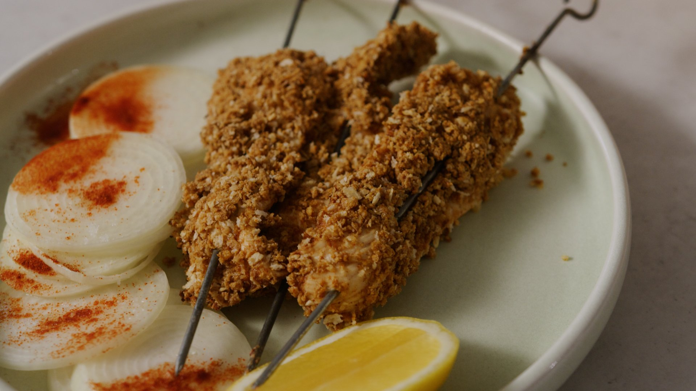

Home Menu
AL Agashe

Discreption :
Agashe is a Sudanese dish that features tender slices of meat, coated in a rich blend of peanut butter, flour and aromatic spices that's baked to perfection.
Ingredients :
- 500 g chicken breasts
- ½ cup sesame oil
- ¼ cup lemon juice
- 1 cup flour
- ½ tsp ground cardamom
- 1 Tbsp poultry seasoning
- 2 tsp paprika
- 2 tsp salt
- 2 tsp salt
- 1 Tbsp coriander powder
- 1 Tbsp ginger powder
- 1 Tbsp red chili powder optional
- 1 Tbsp tomato paste
- 4 heaping Tbsp peanut butter
Steps :
-
Cut the chicken breasts lengthwise into thin slices. Place them in a bowl along with the sesame oil and lemon juice. Toss and set aside to marinate.
-
To make the coating, combine flour, spices, tomato paste, and peanut butter in a bowl until it comes together into a sand-like texture.
-
Coat each chicken breast well with the spiced flour coating, packing to make sure it sticks.
-
Preheat the oven to 410°F. Place chicken on a parchment-lined oven tray and spray with more sesame oil. Bake for 15 minutes or until chicken is cooked through.
-
Serve right away!
>